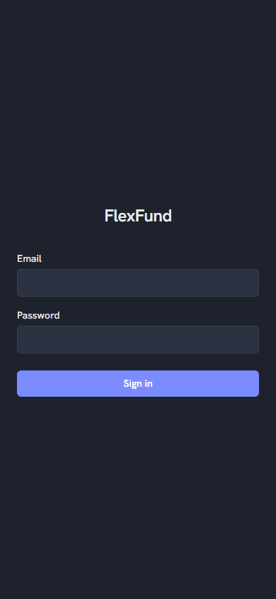

FlexFund: know what you can actually spend
- Problem
- Paycheck-to-paycheck budgeting has one real question a spreadsheet never made simple: will I have enough to cover my bills before my next paycheck, given that bills don't land evenly across pay periods?
- What I made
- A mobile-first PWA that turns recurring bills and income into paycheck-by-paycheck cards, and computes the one number that actually matters: the minimum your balance will hit across every future paycheck, not just this one.
- Where it is
- Live and in personal use, with a public interactive demo account.
Demo login: demo@flexfund.app, password flexfund2026. Uses an average NYC budget, fully interactive, resets anytime.
The problem and the spec
FlexFund exists to answer one question a spreadsheet never made simple: will I have enough before my next paycheck? The real constraint driving the whole design is that bills cluster unevenly across pay periods. Some paychecks run a surplus, some run a deficit, and the two pair up naturally. A number that only looks at the current paycheck misses that entirely.
The hardest scoping call came after the database was already built with real data. The original design had locking, snapshots, and a planned-versus-actual split, borrowed from traditional budgeting apps. Building it against real bills showed that ceremony wasn't earning its cost for a single user who just wants to know what's true right now, so the whole state machine got cut in favor of one living projection: edit a bill, and the entire future recalculates.
| ID | Requirement | Priority |
|---|---|---|
| R1 | Every paycheck shows the Flex Fund: the minimum the running balance will hit across every future paycheck, not just the current one | Must |
| R2 | The schedule is derived, never stored. Editing a recurring bill recalculates the entire future projection instantly, with no locking and no snapshots | Must |
| R3 | Debt paydown timelines and spend-trend analysis, both already possible from data that's already seeded | Later |
Three of the decisions from the spec. The full technical design doc stays private for now.
Design
The visual identity is dark charcoal with a single indigo accent, deliberately plain: no icons, no color-coding beyond what the numbers already mean (red for a deficit, green for income). The real design work went into what a paycheck card shows and in what order: start balance, income, money set aside for yourself, every other bill by due date, then the automatic reserve for future deficit periods, then the ending balance. That order is the whole mental model made visible.
One decision that stayed deliberately restrained: the deficit callout on a heavy paycheck is subtle, not a warning. A paycheck running a deficit that the rollover still covers isn't a problem, so the design treats it as neutral information rather than an alarm, closer to how the money actually behaves than how a typical budgeting app frames it.

The entry point. The paycheck-card view itself is easiest to see live, via the demo link above.
Technical design
The schedule engine runs entirely in Postgres, not the client. Two functions, get_ledger and get_paycheck_summary, do all the work: deriving every bill occurrence from its recurring template, computing the running balance, and injecting an automatic reserve line wherever a future paycheck would otherwise run short. The client calls both functions and renders what comes back. There's no client-side date math at all.
One living projection, or a planned-versus-actual split
| Option | Why it was attractive | Why I didn't pick it |
|---|---|---|
| Planned vs actual, with locking and snapshots | A familiar budgeting mental model: lock in a plan, then compare it against what actually happened | Real bills exposed the cost. Every edit needed a snapshot and a reconciliation step, and two parallel chains doubled the complexity for a single user who just wants to know what's true right now |
| One living projection, no locking, chosen | Edit a bill, the whole future recalculates instantly. No confirmation ceremony, no dual chains, and it matches how the user actually thinks about money | No frozen historical plan to compare against; the payment record only tracks what was actually paid, not a prior projection |
Stack: Next.js 16 (App Router), TypeScript (strict), Supabase (Postgres + Auth), TanStack Query, Recharts, Vercel.
Building and launching
I built this with a defined multi-agent team instead of one open-ended build session: an Architect agent for the scaffold and auth, a Data Layer agent for the types and hooks, a UI Builder agent for the interface, and a QA agent that ran an adversarial checklist against the finished app. Each agent had a scoped system prompt, a fixed output manifest, and a checkpoint I had to approve before the next one started. The technical design doc was the one law everyone had to follow; any agent that hit a real ambiguity had to stop and surface it rather than guess.
The best bug: the app worked perfectly in every browser tab test, but Chrome on my own Android phone offered "Add to Home Screen" instead of a real install. The cause was in the auth middleware, not the PWA files. It intercepted every request, including the service worker and manifest, and Chrome's background installability checker fetches those without a logged-in session, so it silently got redirected to the login page's HTML instead of the actual manifest, and Chrome couldn't confirm the app was installable. The fix was two lines: exclude the service worker, manifest, and icons from the middleware's route matcher.
Looking back
A full security review before calling v2 done turned up nothing high or medium severity, and three real low-severity fixes: error messages that leaked internal details, missing bounds checks on money fields, and a config file that shouldn't have been committable. None were urgent, all were worth fixing before this became more than a single-user app. What I'd revisit: the review itself is scoped to one user; a real multi-user expansion needs an adversarial test that actually tries to read one account's data from another, not just a code-level audit.